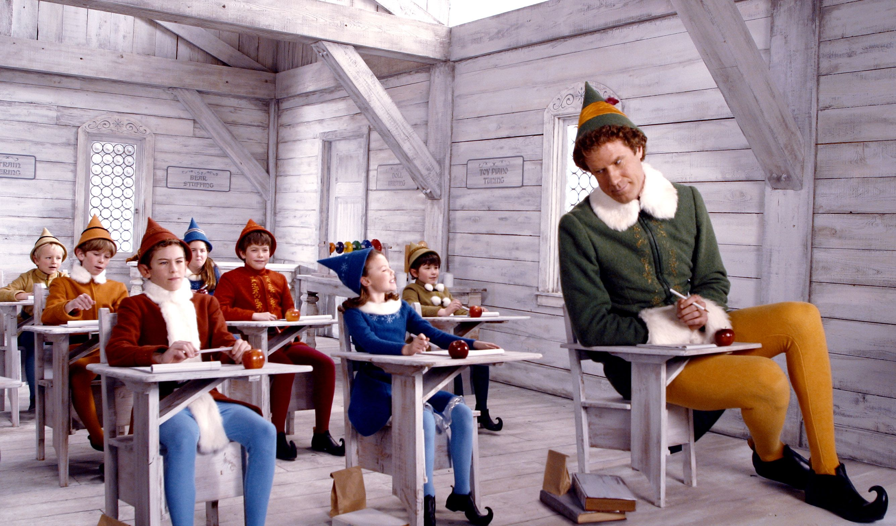
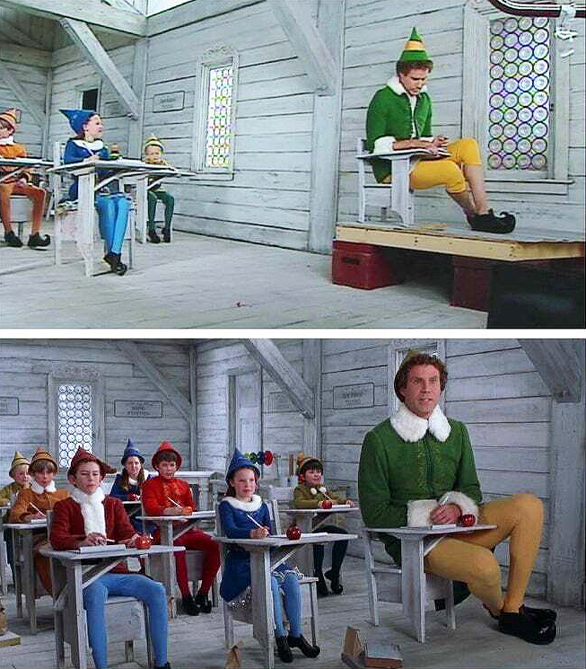

(From Wikipedia, the free encyclopedia)
Elf is a 2003 American Christmas comedy film directed by Jon Favreau, written by David Berenbaum, and starring Will Ferrell, James Caan, Zooey Deschanel, Mary Steenburgen, Daniel Tay, Bob Newhart and Ed Asner. The film centers on Buddy, a human who was adopted and raised by Santa's elves. He learns about this and heads to New York City to meet his biological father while also spreading Christmas cheer in a world of cynics in the process.
Elf was released in the United States on November 7, 2003, by New Line Cinema to critical and commercial success, grossing $220 million worldwide against a $33 million budget. Ferrell's performance as Buddy the Elf was praised by audiences and critics alike, with many calling it one of his best performances. It inspired the 2010 Broadway musical Elf: The Musical and NBC's 2014 stop-motion animated television special Elf: Buddy's Musical Christmas. It is often listed among the greatest Christmas films of all time.
.
On Christmas Eve, a baby at an orphanage crawls into Santa's sack and is unwittingly taken back to the North Pole. Discovering the child at the workshop, the elves name him Buddy after the diaper's brand label and Papa Elf adopts and raises him. Buddy grows up at the North Pole, believing he is an elf and accepted by the elf community. Being human sized, Buddy cannot keep up with the workload and is demoted to toy testing.
Soon, Buddy overhears that he is a human and Papa Elf explains that Buddy was born to Walter Hobbs and Susan Wells and given up for adoption. Susan subsequently died, and Walter now works as a children's book publisher at the Empire State Building in New York City, unaware of Buddy's existence. To Buddy's horror, Santa reveals that Walter is on the Naughty List due to his selfishness, but suggests Buddy could help redeem Walter.
Buddy travels to New York and finds Walter at work; even after mentioning Susan Wells, Walter misinterprets him as a Christmas-gram messenger and has him ejected. Inspired by a security guard's sarcastic remark, Buddy heads to a local Gimbels department store, where he is mistaken for an employee. At the store's North Pole, he meets Jovie, an unenthusiastic employee with whom he is instantly smitten. Hearing that Santa will be at the store the following day, Buddy redecorates the store overnight. When realizing that the Gimbels Santa is not the real Santa, Buddy unmasks him and causes a brawl in the store resulting in Buddy getting arrested.
.
David Berenbaum initially wrote the script in 1993, with Chris Farley and Jim Carrey being early candidates to play Buddy. Berenbaum's screenplay underwent uncredited rewrites by Scot Armstrong, Chris Henchy, and the writing team of Adam McKay and Will Ferrell. Garry Shandling was offered the role of Walter Hobbs but declined. Wanda Sykes was originally cast as The Gimbels Manger Wanda but later dropped out.
According to Favreau, the script was initially "much darker" and did not interest him, although he was interested in working with Ferrell's first post-SNL movie. Asked to rewrite it, a turning point came when he realized he could make Buddy's world an homage to the Rankin/Bass Christmas specials. This allowed him to conceive of a movie that could be PG rated as opposed to the original script, which he guessed would have been rated PG-13.
Principal photography began on December 2, 2002, and wrapped on March 7, 2003. Filming took place in New York City, as well as in Vancouver and at Riverview Hospital in Coquitlam, British Columbia.
The film makes heavy use of forced perspective to exaggerate the size of Buddy compared to all the other elves. Stop motion animation was employed for certain sequences. CGI usage was kept to a minimum due to Favreau's own preference, something that he would later note he "had to fight very hard" for.
Zooey Deschanel singing was not in the original script, and Favreau added it when he learned she was a singer. When Buddy starts singing in the middle of Santaland at Gimbels, the lyrics were not scripted and Will Ferrell improvised the song on the spot.
Apart from snow, most of the computer generated imagery (CGI) in the film was created by Rhythm & Hues Studios. Buddy's belch after drinking a two-liter bottle of Coca-Cola was real, although it was not an actual belch, but a vocal trick dubbed by voice actor Maurice LaMarche.
.
.
.
.
.
.
.
.
